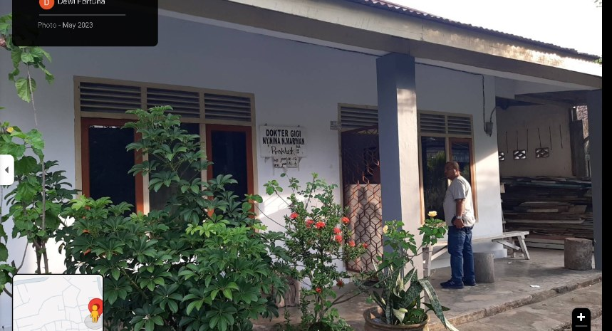

Menjaga kesehatan gigi sejak dini
Konten edukasi singkat yang mudah dipahami pasien dan keluarga.
Selamat datang di TPMDG drg. Nina Marwan — Praktik Mandiri Dokter Gigi Nina Nurliah di Kota Jambi. Hadir dengan informasi yang jelas, alur booking yang sederhana, dan pengalaman digital yang nyaman.

TPMDG drg. Nina Marwan adalah tempat praktik milik drg. Nina Nurliah di Kota Jambi, dengan fokus pada kenyamanan pasien dan alur informasi yang mudah dipahami.
Setiap pasien layak mendapatkan informasi yang jelas tentang kondisi, pilihan perawatan, dan langkah berikutnya.
Website ini menjadi pusat informasi untuk mengenal praktik, melihat layanan, membuat appointment, membaca artikel, serta menemukan lokasi dengan lebih mudah.
Ruang layanan utama untuk kebutuhan pemeriksaan, pencegahan, kebersihan, konsultasi, dan perawatan sesuai kebutuhan pasien.
Pemeriksaan keluhan, evaluasi kondisi gigi dan mulut, konsultasi, serta penyusunan rencana perawatan.
Perawatan kebersihan gigi dan mulut untuk membantu mempertahankan kesehatan jangka panjang.
Pendampingan perawatan secara personal sesuai kebutuhan klinis dan hasil konsultasi.
Hubungi TPMDG melalui WhatsApp untuk menanyakan ketersediaan waktu, jenis layanan, dan informasi kunjungan.
Gunakan tombol ini untuk membuka percakapan WhatsApp dengan pesan booking yang sudah disiapkan.
Booking via WhatsApp →Etalase non-dental dengan karakter yang tetap premium, rapi, dan praktis.
Tempat menampilkan kebutuhan rumah, lifestyle, aksesoris, hadiah, produk UMKM, dan pilihan lainnya.
Perlengkapan dan kebutuhan praktis.
Produk pilihan sehari-hari.
Barang pribadi atau bingkisan.
Ruang untuk produk lokal.
Ruang artikel edukasi kesehatan gigi dan informasi praktik yang dapat terus dikembangkan.
Konten edukasi singkat yang mudah dipahami pasien dan keluarga.
Panduan umum mengenai pentingnya pemeriksaan gigi secara berkala.
Informasi kunjungan, booking, layanan, dan perkembangan praktik.
Tautan penting ditempatkan dalam satu area agar lebih mudah ditemukan.
Identitas visual resmi menggunakan Luxury Black × Champagne Gold × Ivory sebagai standar utama website.